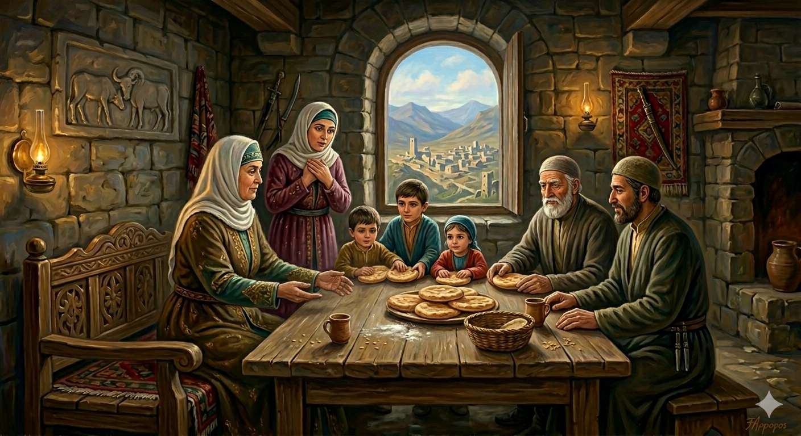

И.А. Дахкильгов. Хьехаме дувцарш - поучительные рассказы-притчи.
И.А. Дахкильгов. Хьехаме дувцарш - поучительные рассказы-притчи. Из ингушского фольклора.

Ялх олг
Цхьан цӀен-нанас хӀара дийнахь ялх сискала олг дотташ хиннад. ДукхагӀа кӀезигагӀа а доацаш - ялх. Из фуд ха дагадехад лоалахарча цхьан кхалсага. ДӀахаьттад цо: - ХӀарача дийнахьа ялх-ялх олг ма доттий Ӏа. Е дукхагӀа, е кӀезигагӀа доацаш, нийсса ялх дот. Фуд хьа из? ЦӀен-нанас жоп деннад: - Шиъ декхарийна дӀалу аз, шиъ юхалург дӀалу, цаӀ дӀакхос, диса цаӀ айса дӀадуъ. - Цу дешай къайле хьаювцал сона, - дийхад. - Аз дер харцахьа дале, хьайна хетар аланза ма Ӏелахь, - аьннад фусам-нанас. - Шиъ берашта юхалург лу аз, вокха шиннеца мараи маьр-даьнеи хьалхашкара декхар дӀатокх, маьр-нанна лур дӀакхессарг лоархӀ аз, хӀаьта ялхлагӀдар айса дуалга хьога дӀа ма аьларий аз.
РУССКИЙ
Шесть лепешек
Некая хозяйка ежедневно пекла по шесть лепешек. Ни больше ни меньше, а всегда шесть. Однажды соседка спросила ее: - Почему ты ежедневно печешь именно шесть лепешек: ни больше и ни меньше? Хозяйка ответила: - Двумя я отдаю долг, другие две я даю в долг, одну выбрасываю, а шестую съедаю сама. - Теперь раскрой смысл своих слов, - попросила соседка. Хозяйка ответила: - Две я отдаю мужу и свекру и тем самым исполняю свой долг снохи; две я отдаю детям - это в долг; одну, которую я отдаю свекрови, - потерянная лепешка, ну а шестую я съедаю сама.
ENGLISH
Six flatbreads
A certain housewife baked six flatbreads every day. No more, no less — always six. One day, a neighbour asked her, 'Why do you bake exactly six flatbreads every day, and no more or less?' The housewife replied, 'I give two away to pay off a debt, I lend out another two, I throw one away and I eat the sixth one myself.' "Now explain what you mean," the neighbour asked. The housewife replied, 'I give two to my husband and father-in-law, thereby fulfilling my duty as a daughter-in-law. I give two to my children on credit. The one I give to my mother-in-law is a lost flatbread. And I eat the sixth myself.'
НОХЧИЙН
Йалх хьокхам
Цхьана хӀусамнанас хӀор дийнахь йалх сискалан хьокхам боттуш хилла. Дукхах кӀезгах а доцуш - йалх. Иза хӀун ду хаа дагадеана луларчу цхьана зудчун. ДӀахаьттина цо: - ХӀор дийнахь йалх-йалх хьокхам ма боттий ахь. Йа дукхах, йа кӀезгах доцуш, нийсса йалх ботт. ХӀун ду хьан иза? ХӀусамнанас жоп делла: - Шиъ декхарийн дӀало ас, шиъ йухалург дӀало, цхьаъ дӀакхуссу, бисин цхьаъ айса дӀабуу. - Цу дешнийн къайле схьайийцал суна, - дехна. - Ас дийриг харцахьа далахь, хьайна хетарг аланза ма Ӏелахь, - аьлла хӀусамнанас. - Шиъ берашна йухалург ло ас, вукха шинца майрий мар-дений хьалхара декхар дӀатокху, марнанна лург дӀакхоьссинарг лору ас, хӀета йолхалгӀаберг айса буу хьоьга дӀа ма алларий ас.
ПОГОВОРКИ
Ала йоӀага – хаза несийна. Скажи (что-то сделать) дочери, но чтобы услышала сноха. Tell your daughter to do something, but make sure your daughter-in-law hears it. Ала йоӀе - хаза несана.Бел (фоттан) санна геттар “дӀа” ма хила, цел санна геттар “хьа” ма хила, йолхьинг (херх) санна “дӀа” а “схьа” а хила. Не будь, как лопата (рубанок), всегда “от себя”; не будь, как тяпка, всегда “к себе”, а будь, как грабли (пила), и “к себе” и “от себя”. Don’t be like a spade (or a plane), always ‘pushing away’; don’t be like a hoe, always ‘pulling towards’; but be like a rake (or a saw), both ‘pulling towards’ and ‘pushing away’. Бел (воттана) санна гуттар «дӀа» ма хила, цел санна гуттар «схьа» ма хила, кагтуха (херх) санна "дӀа" а "схьа" а хила.ВоагӀаш-водаш доацаш лелаяь гаргало хийраяьле дӀайоал. Исчезает тепло родства без взаимных посещений и встреч. The warmth of family ties fades without mutual visits and get-togethers. ВогӀуш-воьдуш доцуш лелийна гергарло хийрадоле дӀадолу.ЙоӀ мел йолча наьна йоӀ дика хул, нус мел йолча маьрнаьна нус во хул. У всех матерей дочери хорошие, у всех свекровей снохи плохие. All mothers think their daughters are good; all mothers-in-law think their daughters-in-law are bad. ЙоӀ мел йолчу ненан йоӀ дика хуьлу, нус мел йолчу марненан нус вон хуьлу.Къахьа вале а, воӀ тол; дира яле а, йоӀ тол. Хоть и горьковат, но сын лучше; хоть и солоновата, но дочь лучше. Though he may be a bit of a sourpuss, a son is better; though she may be a bit of a shrew, a daughter is better. Къахьа валахь а, воӀ тоьлу; дуьра йалахь а, йоӀ тоьлу.Маьрнанеи нуси цхьан гоамача пӀендах баьб. Свекровь и невестка из одног кривого ребра сделаны. A mother-in-law and a daughter-in-law are cut from the same crooked rib. Марнаний нуссий цхьана гомачу пӀендарх бина.Найцах воӀ хиннавац, несех йоӀ а хиннаяц. Зять не станет сыном, сноха не станет дочерью. A son-in-law will never become a son, nor will a daughter-in-law become a daughter. Нойцах воӀ хир вац, несах йоӀ хир йац.Ноаной берригаш дика хилча, хала оамал йола уст-ноаной мичара хьахул-те? Если все матери хорошие, откуда же берутся злые тещи? If all mothers are good, where do all those wicked mothers-in-law come from? Наной берриш дика хилча, хала амал йолу стун-наной мичара схьахуьлу-те?Сесага дикал-вол йовзаргья маьрцӀаьшцеи лоалахошцеи цо леладеча гӀулакхах. Хорошая или плохая жена узнается по ее отношению к мужней родне и соседям. A good or bad wife is recognised by her attitude towards her husband’s family and neighbours. Зудчун дика-вон доьвзира ду марзхошций лулахошций цо леладечу гӀиллакхах.ХӀама ца хар эхь дац, эхь да хӀама ха ца гӀортар. Не стыдно чего-то не знать, стыдно не стремиться узнать. It’s no shame not to know something; it’s a shame not to try to find out. ХӀума ца хаар эхь дац, эхь ду хӀума хаа ца гӀортар.Хьадехаш вале, дӀалуш а хила. Любишь просить – умей и давать. If you like asking for things, learn to give as well. Схьадоьхуш валахь, дӀалуш а хила.“Хьанехка со везий-те?” – аьнна хаьттача, жоп деннад: “Хьай дег чу хьажа. Хьона из везе хьо а цунна веза”. “Некто любит ли меня?” – поинтересовался кто-то, и ему ответили: “Загляни в свое сердце, если ты его любишь, то и ты ему по душе”. ‘Does anyone love me?’ someone asked, and was told: ‘Look into your own heart; if you love him, then he’ll love you too.’ «Хьанехан со везий-те?» – аьлча, жоп делла: «Хьай дег чу хьаьжа. Хьуна иза везахь, хьо а цунна веза».